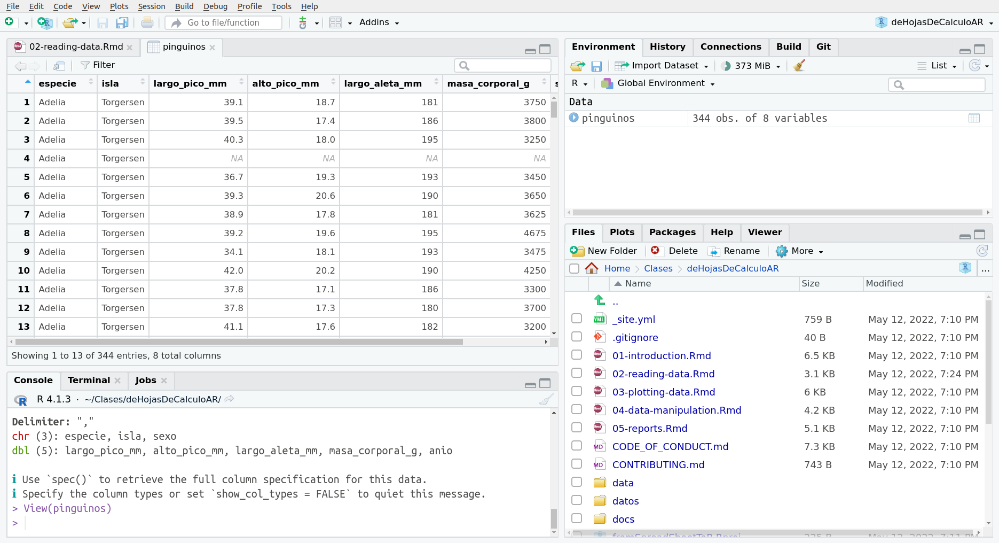

Es hora de presentar el conjunto de datos que estamos utilizando. Los datos de Pingüinos de Palmer fueron recogidos y puestos a disposición por la Dra. Kristen Gorman y la Estación Palmer en la Antártida, LTER, que es parte de la Red de Investigación Ecológica a Largo Plazo. El conjunto de datos incluye varias características de los pingüinos Adelia, Barbijo y Papúa. Puedes leer más sobre ello en la documentación de palmerpenguins.
Estos datos están disponibles en R instalando el paquete palmerpenguins (en inglés) o el paquete datos (en español), pero como queremos aprender a leer datos en R, vamos a leerlos desde archivos csv y xls.
Empezaremos cargando el paquete tidyverse, que nos da acceso a docenas de paquetes y funciones con las que trabajar. Por ahora usaremos la función read_csv() para leer un archivo .csv que está almacenado en el directorio de datos.
library(tidyverse)## ── Attaching packages ─────────────────────────────────────── tidyverse 1.3.1 ──## ✓ ggplot2 3.3.5 ✓ purrr 0.3.4
## ✓ tibble 3.1.6 ✓ dplyr 1.0.8
## ✓ tidyr 1.2.0 ✓ stringr 1.4.0
## ✓ readr 2.1.2 ✓ forcats 0.5.1## ── Conflicts ────────────────────────────────────────── tidyverse_conflicts() ──
## x dplyr::filter() masks stats::filter()
## x dplyr::lag() masks stats::lag()pinguinos <- read_csv("datos/pinguinos.csv")## Rows: 344 Columns: 8## ── Column specification ────────────────────────────────────────────────────────
## Delimiter: ","
## chr (3): especie, isla, sexo
## dbl (5): largo_pico_mm, alto_pico_mm, largo_aleta_mm, masa_corporal_g, anio
##
## ℹ Use `spec()` to retrieve the full column specification for this data.
## ℹ Specify the column types or set `show_col_types = FALSE` to quiet this message.En Excel o Google Sheets, los datos se almacenan en la hoja de cálculo y se organizan en celdas. En R, se almacenan en objetos. Cuando leemos un archivo csv, los datos van directo a un data.frame llamado pinguinos y están listos para ser utilizados. En la solapa “Environment” podemos ver el objeto pinguinos, y si hacemos clic en ese objeto los datos se abrirán en una nueva pestaña para que veamos que pinta tiene.

Esta previsualización es lo más parecida a la que tenemos en una hoja de cálculo. Podemos llegar a este panel ejecutando View(pinguinos) en la consola. Hay otras funciones que nos sirven para visualizar nuestros datos. Vamos a utilizar una de ellas:
glimpse(pinguinos)## Rows: 344
## Columns: 8
## $ especie <chr> "Adelia", "Adelia", "Adelia", "Adelia", "Adelia", "Ade…
## $ isla <chr> "Torgersen", "Torgersen", "Torgersen", "Torgersen", "T…
## $ largo_pico_mm <dbl> 39.1, 39.5, 40.3, NA, 36.7, 39.3, 38.9, 39.2, 34.1, 42…
## $ alto_pico_mm <dbl> 18.7, 17.4, 18.0, NA, 19.3, 20.6, 17.8, 19.6, 18.1, 20…
## $ largo_aleta_mm <dbl> 181, 186, 195, NA, 193, 190, 181, 195, 193, 190, 186, …
## $ masa_corporal_g <dbl> 3750, 3800, 3250, NA, 3450, 3650, 3625, 4675, 3475, 42…
## $ sexo <chr> "macho", "hembra", "hembra", NA, "hembra", "macho", "h…
## $ anio <dbl> 2007, 2007, 2007, 2007, 2007, 2007, 2007, 2007, 2007, …Esta salida es diferente y nos da información sobre el tipo de datos en cada columna (o variable).
A veces nuestros datos no son tan amigables y necesitamos dar más información a la función para poder leer los datos correctamente. Puedes encontrar estas opciones buscando en la documentación de la función.
Escribe
?read_csv()en la consola y revisa la documentación. ¿Cómo se llama la opción para cambiar el delimitador por defecto?
¿Cómo podemos trabajar con archivos xlsx? Necesitaremos otro paquete de R, readxl que ya está instalado en el proyecto RStudio Cloud, solo necesitamos cargar la librería. En este caso la función se llama read_excel().
library(readxl)
penguinos_xls <- read_excel("datos/pinguinos.xlsx")Y listo, hemos leído un archivo xlsx. Por supuesto, a veces tenemos que trabajar con archivos con múltiples hojas o con datos que no están muy organizados. Esta función viene con varias opciones o argumentos para leer hojas específicas (sheet = <nombre de la hoja>) o un rango específico (range = “C1:E7”`) y otros.
Ahora que tenemos los datos leídos en R, es el momento de analizar esos datos.